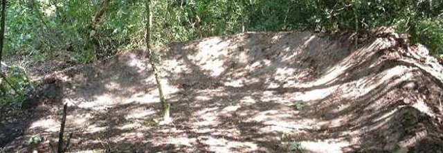
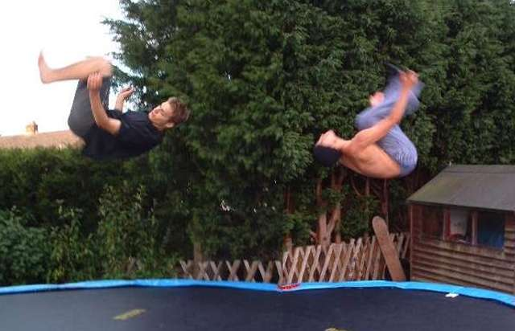
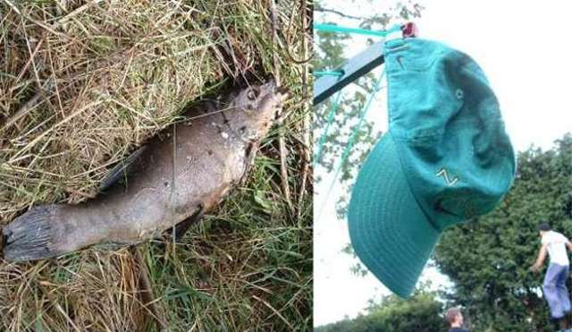
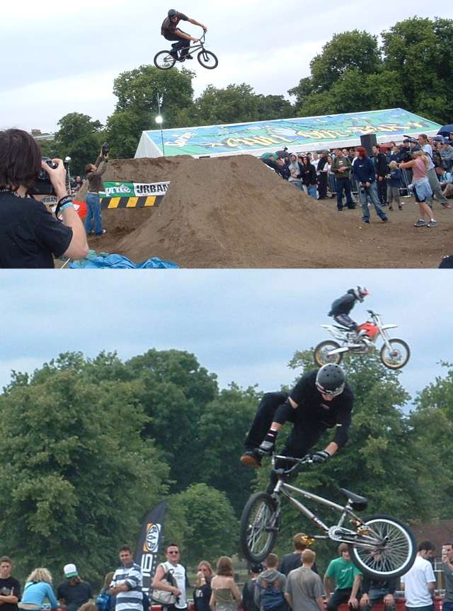

wow, it feels like i have been so busy. it rained a lot this week. i have been working at playscheme in the mornings with noisy arrogant little idiots who only ever want to play football or hockey, probably because of the violence involved, and complain constantly about the teams being unfair, or being hit by the ball, or something else. glad that's over then.
sorry there have been no updates but i have been busy at the trails too. i
have been doing 4-6 hours digging every night. this is my new improved berm. my
line should be running well, but i can't test it till i get a brake. i broke my
brake you see. a new one is coming in the post. when i get that then i'll try
the line and if its good you can come and ride it. however, tim is rebuilding
his line to kiddy proportions, which is taking a long time, so that line might
not be running for another week.



well theres still loads of stuff that's happened, but i don't have the photos. maybe i'll sneak in some urban games ones. i don't want to do an urban games page cos its all riders i don't know, but i can put a few pictures here and there.
so anyway where was i. my sister had a sleepover so we were sent out of the
house for the evening. we went to the park as the lights stay on til late. pegs
on and everything. i tried to fix my brake, but broke it so i rode the park
brakeless. it was ok but i have a brake coming in the post with new grips and
saddle. we went to asda for tea and got loads of food, but also, spades. they
had spades on sale for £3 or stainless steel ones for £5. go and buy some.

i watched snatch too. it's a good film.